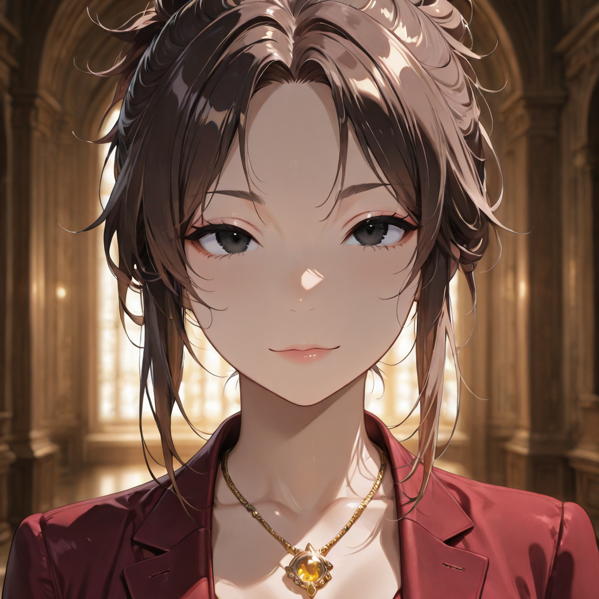
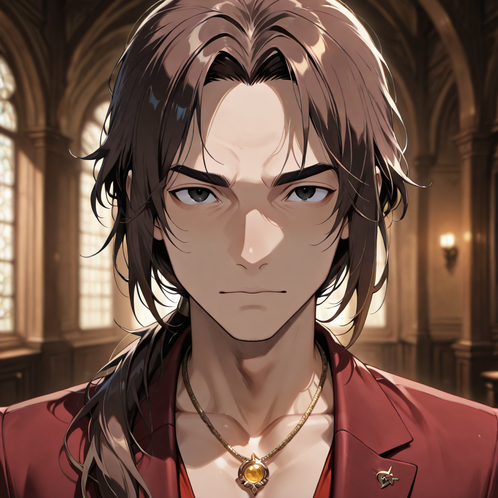
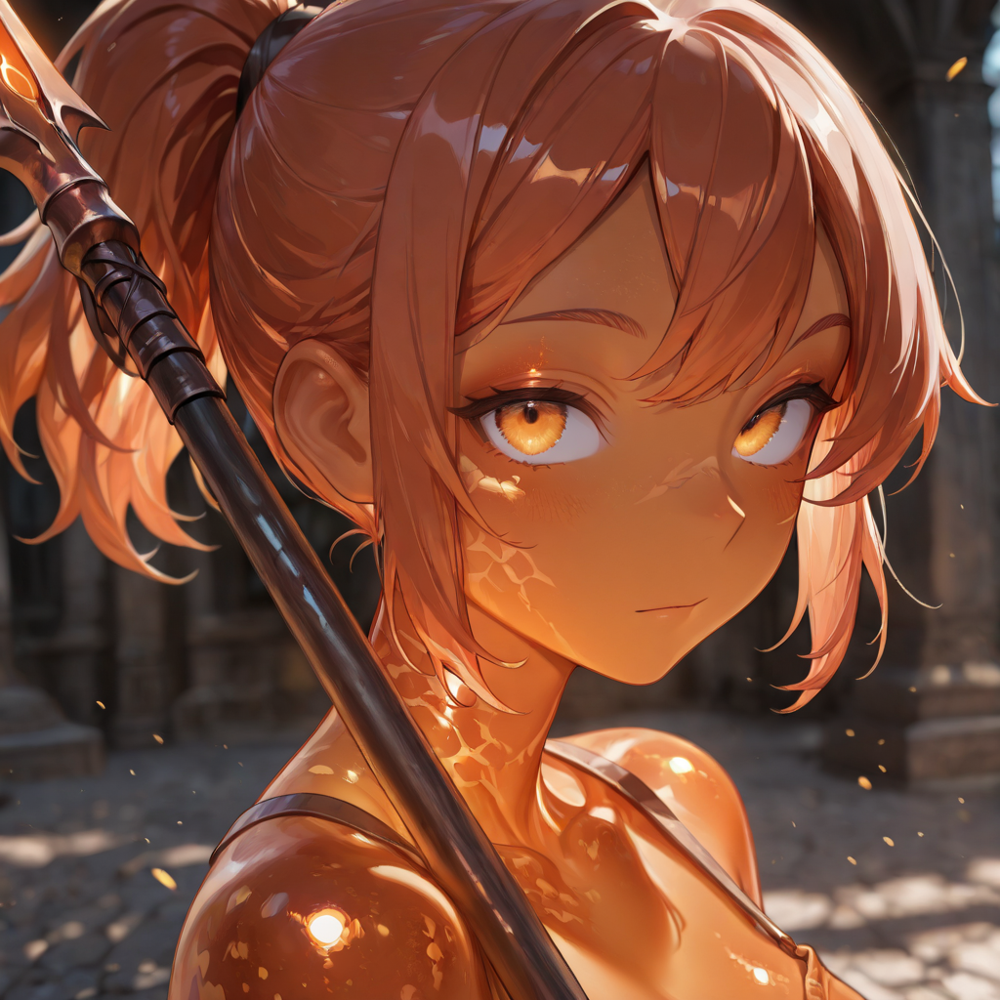
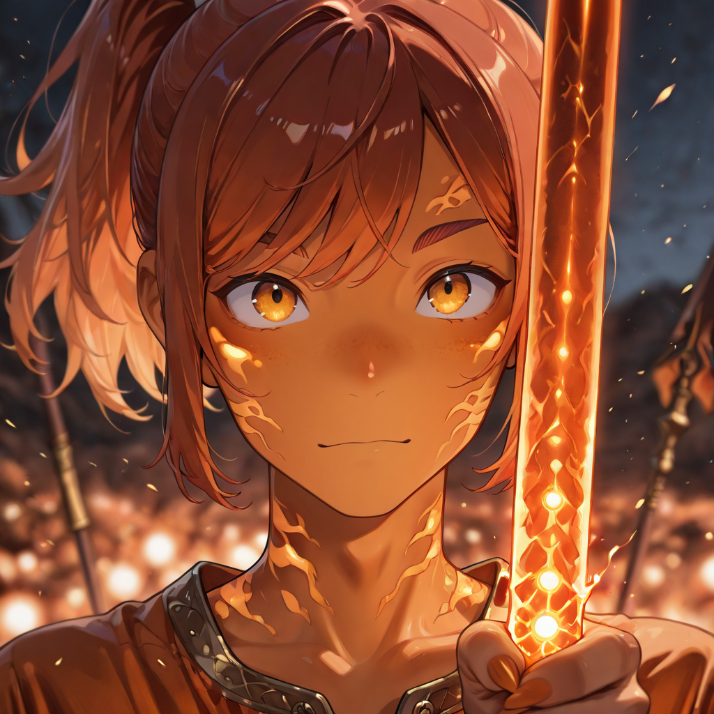
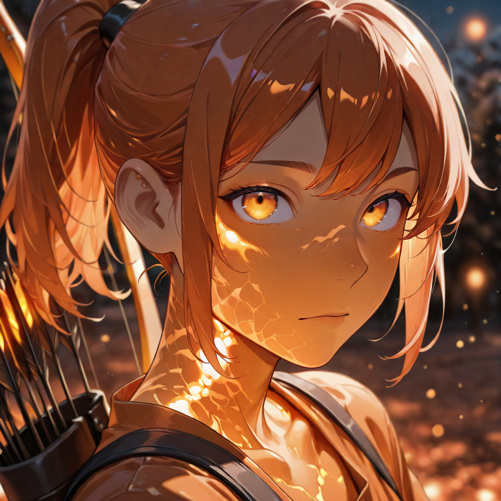
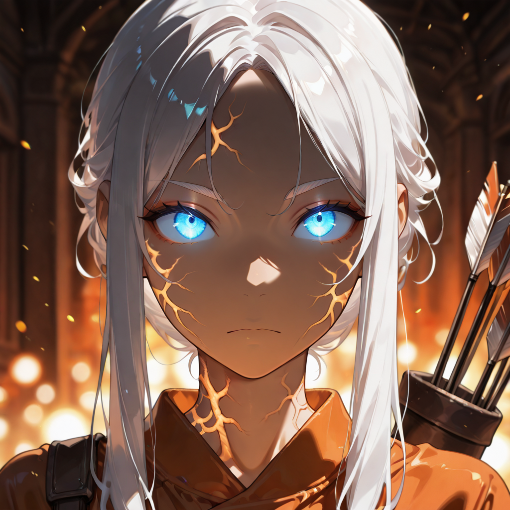
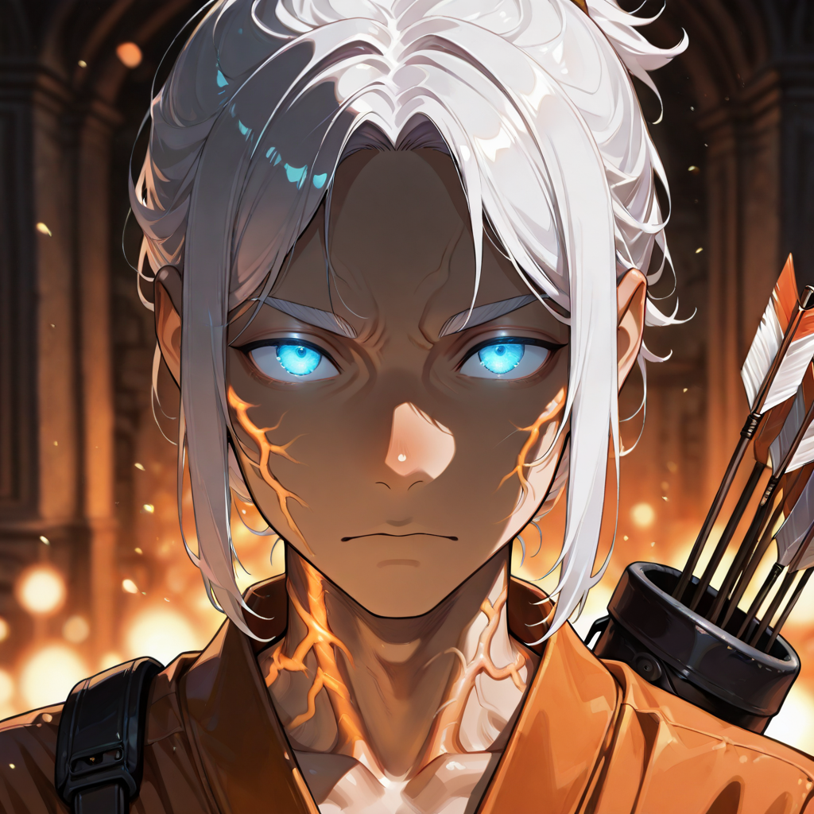
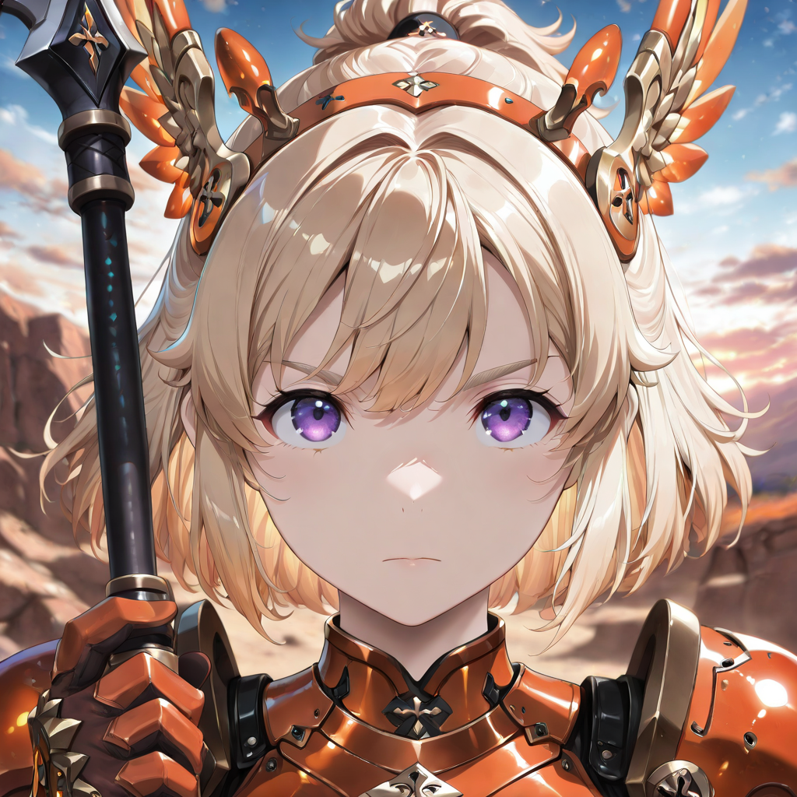
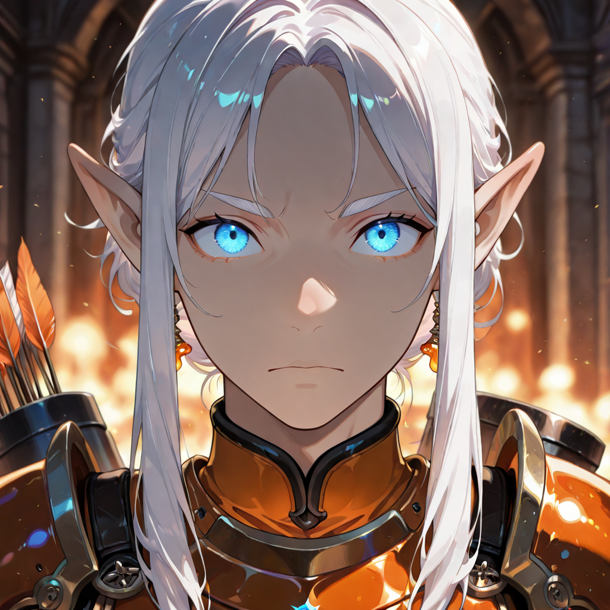
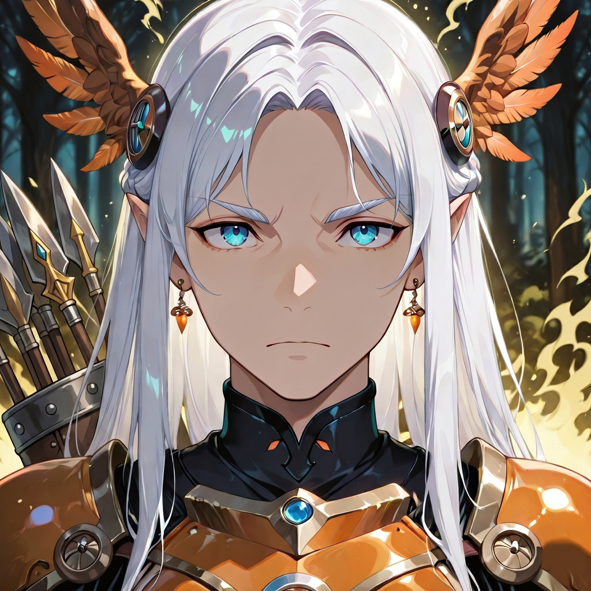

The Arrow Already Left a Minute Ago
The Amber Sentinels are not mere skeletal archers. They are the result of an alchemical and spiritual process aimed at preserving the soul in its purest, most static form. They are born from the souls of those defined in life by patience, observation, and the ability to see beyond: snipers, watchmen, astronomers, and artists obsessed with detail.
While the Arborei are raw wood and the Shadows are dark fluid, the Sentinelle are Living Gems. Their bodies are composed of a translucent resin, as hard as diamond yet warm to the touch, secreted by the Mother Tree. Inside this golden, semi-transparent shell, the original skeleton or the soul's shadow is often visible , suspended like a prehistoric insect trapped for eternity.
They are creatures of terrifying beauty. They never need to blink, and their eyes are prismatic lenses capable of seeing thermal and magical spectra across kilometers of distance. Their two evolutionary paths diverge on method: the Custodian path favors control, suppression, and aerial domination; the Archer path favors patience, precision, and the singular perfect shot. Both paths converge in the Eye of the Forest, a being for whom the act of seeing and the act of shooting have become a single, indivisible breath.
Active Roster


Noble
Commanders whose authority was forged in aristocratic halls and reborn in the amber of Malicott's grace. They coordinate ranged formations with cold precision.


Amber Caster
The earliest form of the Sentinella , a soul freshly encased in amber resin, still learning to see the world through prismatic eyes and channel energy into a basic ranged attack.


Custodian
Those who feel the pull toward control and suppression. They combine magical shots with tactical positioning, locking down enemies and protecting key positions.


Archer
Those who feel the pull toward patience and precision. They wait. They breathe. They release. Each arrow is not fired , it is placed.


Justiciar
Enforcers of order from above. They bind enemies in place with enchanted shots, creating lanes of control that funnel the enemy's advance into prepared kill zones.


Marksman
Sharpshooters whose amber eyes see through terrain, illusion, and armor. They eliminate high-value targets across distances that should make the shot impossible.


Valkyrie Lancer
They earned Malicott's wings and traded bows for lances. They dive at devastating angles, combining aerial mobility with the suppressive authority of their former path.


Elf Sniper
Elves who remember who they are , and realize that their ancient patience was always training for this. Their phantom shots ignore cover, distance, and conventional physics.


Eye of the Forest
The ultimate expression of the Sentinella. Seeing and shooting are one. Control and precision are one. They do not aim at enemies , the entire battlefield is their target.